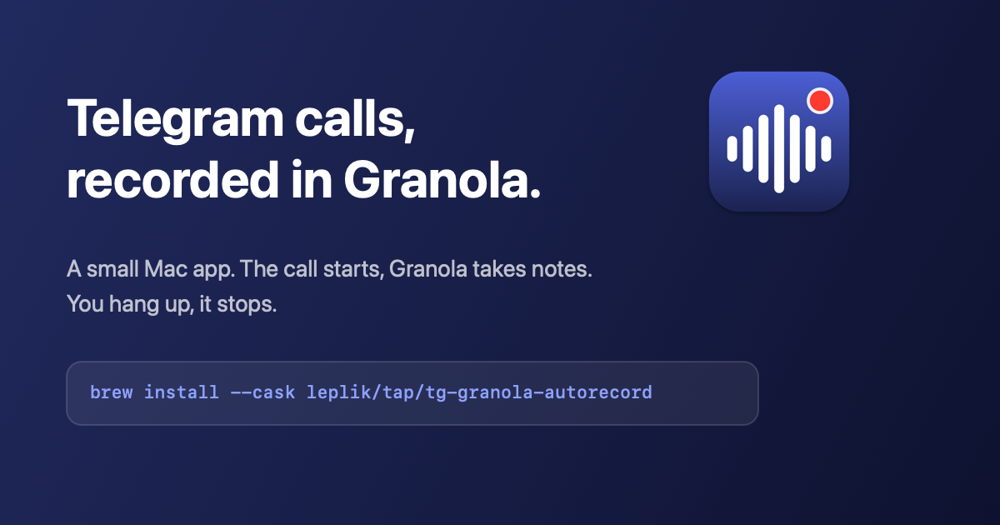

How it works
A Telegram call starts
The app sees that Telegram is using the microphone and the speaker.
Granola starts recording
A note appears and notes are taken, as in any other call. A notification offers a Stop button.
You hang up
The recording stops by itself and Granola writes the summary.
No window, no menu bar icon. It speaks up only when something needs you.

Set up once
Open the app
It adds itself to Login Items and shows what is still missing.
Allow notifications
They carry the Stop button and every warning.
Allow Accessibility access
It is how the recording is stopped when a call ends.
Check everything with one command:
tg-granola-autorecord doctor
Questions
- Which Telegram clients work?
- Telegram Desktop from telegram.org and from the Mac App Store, and the native Telegram for macOS client.
- Does anything leave my Mac?
- Not through this app. It makes no network requests. It only asks macOS which apps use the microphone and the speaker, and never touches audio. The notes are ordinary Granola notes and follow your Granola sharing settings.
- What if Granola is already recording?
- It is left alone. The app only stops recordings it started, and never restarts one you stopped by hand.
- Is it reliable?
- Granola has no public command for starting or stopping a recording, so the app relies on undocumented parts of the Granola desktop app, which a Granola update can change. Every failure ends in a notification instead of silence.
- Do I need to tell people they are being recorded?
- In many places, yes. Recording calls is your responsibility.